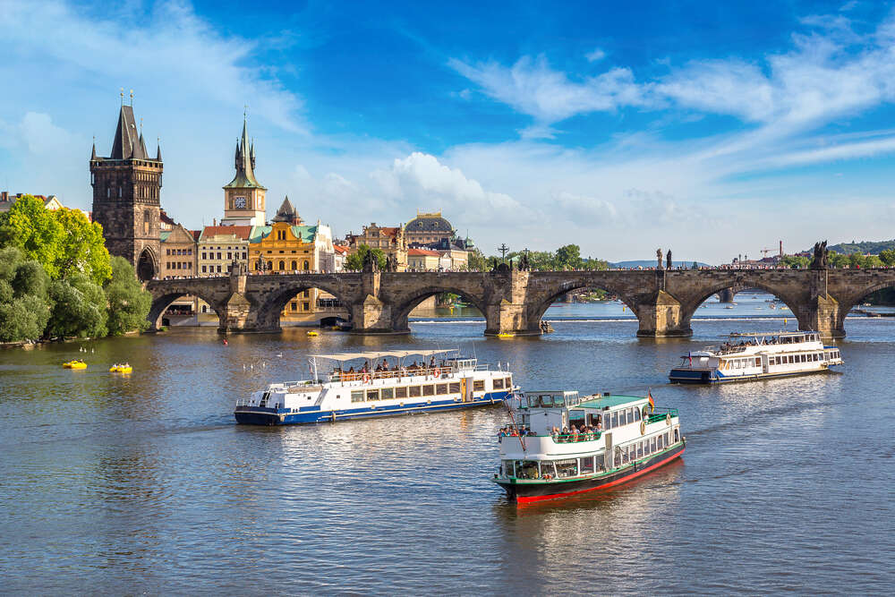
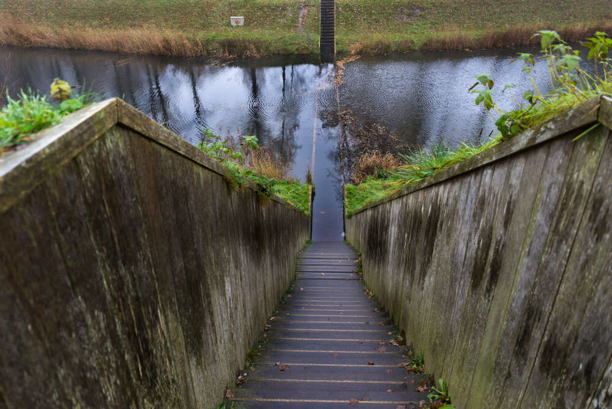

Красивые, впечатляющие и неожиданные мосты планеты
Не все мосты являются лишь удобной конструкцией для объединения рек и долин. Многие являются достопримечательностями, некоторые символами городов и даже стран. А туристы со всех концов света стекаются, чтобы лично увидеть их и прогуляться. Команда Travellizy составила Топ чудес техники и жемчужин архитектуры.
Мост Хаджу (город Эсфахан, Иран)
Один из самых красивых мостов мира и лучший образец персидской культуры мост Хаджу. Строительство датируется 1650 годом. Мост примечателен потрясающим каменным фундаментом, яркой плиткой с внешней стороны и оригинальными изображениями изнутри, датируемыми 17-ым веком.
Двухуровневая конструкция очень практична: соединяет берега реки Зайендеруд, служит плотиной, разделяя реку на 2 части, и является любимым местом отдыха у воды в жарком регионе.
Раньше нижний уровень моста использовался пешеходами, а верхний повозками. Украшает строение 23 арки. А с 8-угольных павильонов открывается великолепный вид на город и реку. Вибрирующая акустика привлекает местных певцов и музыкантов, которые выступают здесь по пятницам.
К достопримечательности туристы добираются, прогуливаясь вдоль набережной города Эсфахана. Осмотр моста бесплатный.
Понте-Веккьо (город Флоренция, Италия)
Средневековый арочный мост Понте Веккьо, возвышается над самым узким местом реки Арно во Флоренции. Его построили в 1345 году. Во время Второй Мировой Войны это был единственный мост, который не тронули немцы, отступая. Раньше на территории моста находился средневековый мясной рынок.
Но желающих торговать было настолько много, что пришлось сконструировать дополнительные лавки, нависающие над водой. Они и сейчас выступают за пределы моста. Сегодня здесь располагается множество сувенирных и ювелирных лавок.

Добираются путешественники к мосту на автобусах С3 или D (остановка Ponte Vecchio). Прогуляться по нему можно совершенно бесплатно.
Карлов Мост (город Прага, Чехия)
Реку Влтаву в Праге пересекает каменный Карлов мост. Длиной 621 м и шириной 10 м. Он опирается на 16 арок и украшен невероятной аллеей из 30 статуй в стиле барокко. Стоит отметить, что сегодняшние статуи это всего лишь копии исторических монументов.
Подлинные памятники, много лет назад, были перенесены в Национальный музей.
Путешественникам нравится атмосфера моста. Сюда спешат, чтобы насладиться потрясающим панорамным видом на Пражский Град. И, конечно же, сделать самые лучшие селфи.
Приезжают к мосту на трамваях #17 и #18 (остановка Karlovy lázně). Выбирайте метро: линии С, до станции Staroměstská, и линии А, до станции Malostranská.
Цепной мост (город Будапешт, Венгрия)
Берега реки Дунай в Будапеште объединяет Цепной мост. В год строительства, в 1849 году, он являлся истинным чудом света и был самым большим мостом мира. По вечерам мост подсвечивается сотнями огней, подчеркивая его классическую форму.
По вечерам мост подсвечивается сотнями огней, подчеркивая его классическую форму.
Приезжим удобно добираться до моста на автобусе #105. Метро, линии М1, M2, M3 до станции Deák Ferenc tér. И трамваях #2, #19 и #41.
Мост Хеликс (Сингапур)
В Сингапуре в 2010 году спроектировали пешеходный мост Хеликс в виде молекулы ДНК. В конструкцию встроены четыре смотровые площадки. “Умный” мост частично застеклен. По ночам чудо техники самостоятельно “контролирует” подсветку неоновыми огнями и обеспечивает климат-контроль внутри.
Путешественники приезжают к мосту на метро до остановки Promenade MRT station.
Бруклинский мост (город Нью-Йорк, США)
Бруклинский мост называют культовым сооружением и индустриальным чудом света. В США это один из самых старых висячих мостов, длиной 1825 м. Он разделен на автомобильную и пешеходные зоны. Конструкция моста включает 2 готические башни по 83 м. А в 2006 году в одной из стен обнаружили вход в бомбоубежище. Прогулка по мосту занимает 45 минут. Но туристы, конечно, гуляют по нему намного дольше, наслаждаясь видами и постоянно находя новые ракурсы для фотоотчетов в сетях.
Линии метро 4, 5, 6, J, Z, R, А и С довозят всех желающих к Бруклинскому мосту.
Чэнъянский Мост дождя и ветра (регион Гуйчжоу, Китай)
Красивый трехуровневый мост с древней историей и мелодичным названием находится в Китае. В 1916 году его создали лучшие мастера дунов, народности населяющей окрестности региона Гуйчжоу. Строение возведено из деревянных массивов и каменных плит. 64-метровый мост дополняется 12 павильонами и 5 верандами. Опорами служат 5 каменных платформ. Интересно, что конструкция моста воссоздана по типу 3D-пазла, каждая часть которого идеально стыкуется с последующей. Поэтому не понадобилось ни одного гвоздя при создании уникальной достопримечательности.

За осмотр моста взимается плата €7,5.
Радужный Мост или Мост Радуги под Лунным светом (Сеул, Южная Корея)
Двухъярусный мост Банподэгё через реку Хан запоминается особым Фонтаном из радуги. 380 водных струй ослепляют разноцветными огнями после заката. Благодаря уникальности гидроконструкции мост-фонтан является музыкальным, “танцуя” под 100 мелодий.
Струи фонтана расположены по краям моста и направлены вниз. Вода из реки не только радует своей красотой, но и проходит очистку, извергаясь из фонтана. В 2008 году мост был внесен в Книгу Рекордов Гиннесса, как самый длинный мост-фонтан на планете.
Фонтан включен круглосуточно. Также ежедневно можно увидеть 15-минутную игру радуги в 12:00 и 19:30. 20-минутные представления проходят в 20:00, 20:30 и 21:00. Самый удобный способ добраться на метро, до станции Express Bus Terminal Station.
Мост Миллениум (Гейтсхед, Великобритания)
В Великобритании, через реку Тайн, раскинулся первый наклоняемый в мире мост Миллениум. Уникальность конструкции в том, что как только к ней приближается корабль, то пешеходная часть моста поднимается на 30 градусов, пропуская судно. А затем возвращается в свое изначальное положение.
Процесс занимает всего 4 минуты 30 секунд. По мосту длиной 126 м любят прогуливаются пешеходы и ездить велосипедисты.
Интересно, что сооружение самостоятельно производит уборку. Весь мусор автоматически скатывается в специальные резервуары во время поворота.
Ближайшая железнодорожная станция к мосту Центральный вокзал Ньюкасла. Отсюда пешком к достопримечательности можно пройтись за 15 минут.
Мост Моисея (Хальстерен, Нидерланды)
В 2011 году в Нидерландах, появился потрясающий мост, известный сегодня как Мост Моисея. Во рву, окружающем Форт де Рувере, проложили понтон для туристов, длиной 51 м. Уникальность конструкции в том, что она создает иллюзию расступившихся вод, повторяя историю из Библии и побега Израильтян из Египта. Пешеходная зона для туристов находится ниже уровня воды, фактически сооружение “утоплено” в водах вокруг крепости.
Архитекторы использовали водостойкое дерево с дополнительной гидроизоляцией. Считается, что мост прослужит минимум 50 лет.